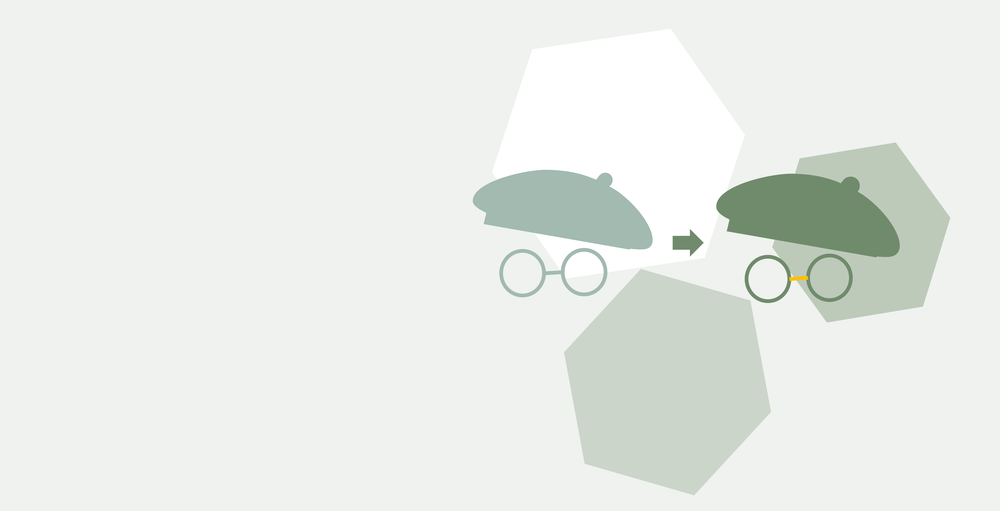

動機
此為筆者之科技部大專生專題研究計畫，以Line對話機器人為中心，探究在藝術等展覽場域，不同角色使用者在體驗上的影響因素，期望建構出讓策展與觀展雙邊，溝通更有效率且便利的平台，為相關領域貢獻一分心力。
作者
林宜德，國立清華大學心理學第一專長、創新設計學分學程，跨領域學習之大四學生，指導老師為學習科學與科技研究所 廖冠智教授。

演進
目前最新的版本為藝管家1.0，前一版藝管家0.0是以筆者觀察社會展覽概況與需求進行發想與設計，而藝管家1.0則更加著重策展者的角度，進行改良。